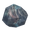

炎金属矿脉
本站支持中英文站内搜索。带 ↗ 的链接指向外部网站；各页来源版本见页脚。

矿脉位于灰烬之地生物群系的熔岩利维坦顶部。开采可能使其开始沉入熔岩，类似在无尽之海中从利维坦开采甲壳素。
获取方式
熔岩利维坦在世界生成时出现，沉入熔岩深处后不会重新生成。
每个世界最多尝试在灰烬之地生物群系生成100只熔岩利维坦，海拔10–1000米。
每条焰金属矿脉布局相同，为27节点的垂直尖塔。每节点100点生命，需3级工具级，即黑金属镐开采。玩家常需玄武岩炸弹或驯服的灰烬刚鬣跨越熔岩，但部分矿脉够靠岸，无需涉熔岩。
掉落物
每段矿石开采掉落：
| 数额 | 物品 | 机会 |
|---|---|---|
| 2-4 |  焰金属矿 |
100% |
完整开采每条矿脉，平均获得82份焰金属矿石。
每次击打矿段有1%概率惊动熔岩利维坦，以声音表示。首次惊动20秒后，它开始永久沉入熔岩，并继续发声。这20秒内，后续击打仍有1%概率触发初始声音。
从开始下沉至完成最多75秒，视地形及已开采矿段，可能更早完全消失。最初几秒反而抬高身体，再缓慢加速下降，最高约每秒0.6米，约50秒后又减速。
熔岩利维坦及矿脉下沉后永不浮出，未采节点永久损失。
说明
- 目前唯一可用的 镐击 工具等级至少3的是 黑金属镐，每击49-64点伤害，取决于品质。因此品质1需3击，较高品质需2击破坏节点。
- 焰金属矿或许最容易从矿床获取。装备及技能合适时，每只熔岩利维坦可相对轻松采出数堆矿石。另一主要方式为攻打灰烬亡灵堡垒，通常需攻城装置并与大量敌人战斗。
图片库
- 熔岩中的焰金属矿脉。
- 靠岸的焰金属矿脉。
- 完全开采后的熔岩利维坦。


| 生物群系 | |||||||||||||||||||
|---|---|---|---|---|---|---|---|---|---|---|---|---|---|---|---|---|---|---|---|
| 重要 地点 |
| ||||||||||||||||||
| 资源 采集点 |
| ||||||||||||||||||
Flametal Ore Veins are resource nodes which can be mined for Flametal Ore using a Black Metal Pickaxe or better.
The veins are found on top of 'Lavaiathans' found in the Ashlands biome. Mining the ore on top of a Lavaiathan may cause the vein to start sinking into the lava (similar to mining on a Leviathan for Chitin in the Ocean biome).
Availability
Lavaiathans are spawned upon world generation and do not respawn once they have retreated below the depths of the lava.
Up to 100 attempts to spawn a Lavaiathan are made per world, within the Ashlands biome, at altitudes of 10–1000 meters.
Each Flametal Ore Vein has the same vertical-spire layout with 27 nodes. Each node has 100 health and requires a tool tier of 3 (i.e. a Black Metal Pickaxe) to mine. Players will often need Basalt Bombs or a tamed Asksvin to reach them in the lava, although some veins may spawn close enough to land to reach without traversing the lava.
Drops
Each ore segment drops the following when mined:
| Amount | Item | Chance |
|---|---|---|
| 2-4 | Flametal Ore | 100% |
Each ore vein, once all of its segments are mined, will yield 82 Flametal Ore on average.
Each time an ore segment is hit, there is a 1% chance that the Lavaiathan will be disturbed (indicated by it emitting noise). Once 20 seconds have passed after it is first disturbed, it will begin permanently submerging into the lava (accompanied by more noises). During those 20 seconds, further hits still have a 1% chance to trigger the initial noise.
It takes a maximum of 75 seconds from the start of the Lavaiathan's submersion process until its completion; depending on the layout of the terrain and which ore segments were mined, it could disappear fully well before then. During the first few seconds it actually raises its body up higher, then slowly begins accelerating downward, eventually moving at up to roughly 0.6 meters per second, then slowing down again after about 50 seconds.
Once a Lavaiathan and its ore vein sinks, it will never re-emerge, and any nodes that were not mined are lost.
Notes
- Currently, the only available pickaxe with a tool tier of 3 or higher is the Black Metal Pickaxe, which deals 49-64 damage per hit (depending on quality). This means that it takes 3 hits (at quality 1) or 2 hits (at higher qualities) to break a node.
- Using The Elder's Forsaken power provides a 60% boost to pickaxe damage. This raises the damage per hit to 78 at quality 1, up to 102 at quality 4, meaning that a quality 4 Black metal pickaxe can break nodes in one hit while the power is active.
- The Battering Ram deals 600 Pickaxe damage per hit at tool tier 5 in a small area of effect, which is capable of breaking one or more node(s) per hit. However, it may not be practical to use a Battering ram to mine Flametal ore since they are slow, difficult to position and flammable - not ideal qualities for working on a sinking vein above lava.
- Flametal Ore is perhaps most easily obtained from their ore deposits, as with proper equipment and skill, several stacks of ore can be mined per Lavaiathan with relative ease. The other main way to obtain Flametal ore is by raiding Charred Fortresses, which typically involves the use of siege devices and fighting many enemies.
Gallery
-
Flametal veins mid lava.
-
Flametal veins near land.
-
Completely mined Lavaiathan.
| Biomes | Meadows • Black Forest • Ocean • Swamp • Mountain • Plains • Mistlands • Ashlands • Deep North • World Edge | ||||||||||||||||||
|---|---|---|---|---|---|---|---|---|---|---|---|---|---|---|---|---|---|---|---|
| Points of interest |
| ||||||||||||||||||
| Resource nodes |
| ||||||||||||||||||